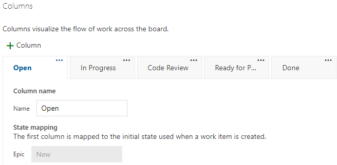

Azure DevOps Boards - Columns
Azure DevOps Boards'daki "Columns" (Sütunlar) ayarları, tahtadaki iş akışını ve kartların durumlarını düzenlemenizi sağlar. İşte "Columns" hakkında genel bilgi:
- Sütunlar, tahtadaki iş akışını temsil eder ve kartların hangi durumda olduğunu gösterir. Örneğin, "Yapılacaklar", "Devam Eden", "Tamamlanan" gibi sütunlar oluşturabilirsiniz.
- Sütunlar, projenizin gereksinimlerine ve iş süreçlerinize göre özelleştirilebilir. İhtiyaçlarınıza bağlı olarak mevcut sütunları düzenleyebilir veya yeni sütunlar ekleyebilirsiniz.
- Her sütun, kartların belirli bir durumu veya aşamasını temsil eder. Örneğin, "Yapılacaklar" sütunu, işlerin henüz başlamadığı veya atandığı, yapılması gereken işlerin listesini içerebilir.
- Kartlar, sütunlar arasında taşınarak durumları güncellenir. Örneğin, bir kart "Yapılacaklar" sütunundan "Devam Eden" sütununa taşındığında, kartın durumu işin devam ettiğini gösterir.
- Sütunlara özel durumlar, etiketler veya diğer özel alanlar ekleyebilirsiniz. Bu şekilde, kartların daha ayrıntılı bir şekilde takip edilmesini ve kategorize edilmesini sağlayabilirsiniz.
- Sütunların düzeni ve sırası, tahtanın genel yapısını belirler. İş akışınızı yansıtan bir düzen oluşturarak ekip üyelerinin işleri izlemesini ve işbirliği yapmasını kolaylaştırabilirsiniz.
- Sütunlarda sınırlamalar veya kısıtlamalar ayarlayabilirsiniz. Örneğin, her sütunda maksimum kart sayısı veya atama sayısı gibi sınırlamalar belirleyebilirsiniz.
- Azure DevOps Boards'daki "Columns" ayarları, iş akışınızı ve kartların durumlarını esnek bir şekilde yönetmenizi sağlar. Projenizin ihtiyaçlarına göre sütunları özelleştirerek işleri daha verimli bir şekilde takip edebilir ve ekip üyeleri arasında işbirliğini geliştirebilirsiniz.
